Before you start
CaVeSal® Obstetric Emergencies is a clinical decision-support tool for the on-call shift and the delivery room. It brings together in a single app the five emergency modules (Code Red, Code HDP, Code Yellow — Sepsis, Thromboprophylaxis, and Labor and Postpartum), a hands-free voice mode, Guide Mode with summarized guidelines and a case simulator.
The patient's common data are entered only once in the top bar and are copied automatically to every module. Each card shows its source at the bottom and, when more than one well-supported guideline exists, a selector to choose the criterion.
Everything is calculated on your device. Once installed, the app works offline and does not send patient data to servers.
Demo and full version
Free demo (cavesal.app/cavesal-emergencias/demo/): shock index, MAP and BMI, one-off qSOFA, a static version of the Obstetric Alert Scale (single entry, no follow-up), the simulator and the preloaded examples.
Full version (cavesal.app/cavesal-emergencias/full/): adds the complete Code Red, Code HDP, bleeding and coagulation, sepsis with California Criteria, SIRS and MEOWS, thromboprophylaxis, labor and postpartum with partographs, hands-free voice mode, the dynamic Alert Scale with golden-hour clock, Guide Mode and the bridge to CaVeSal® IA.
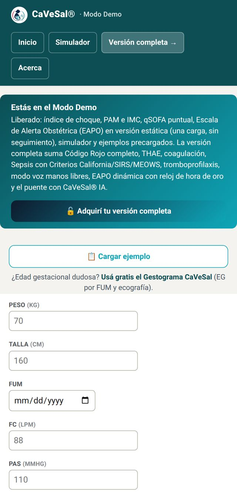
Install and activate
Get Emergencies alone or in a combo on Gumroad, or by bank transfer at Buy without a card. You receive 1 Emergencies key by email (format XXXX-XXXX-XXXX-XXXX). With combos you also receive the key for each included app.
Open cavesal.app/cavesal-emergencias/full/ on the device where you will use it and install it first: on Android, Chrome menu and "Install app" or "Add to Home screen"; on iPhone, Safari's Share button and "Add to Home Screen".
Open CaVeSal® from the installed icon, paste your key and tap Activar (Activate).
Done: it stays permanently enabled on that device, with updates included.
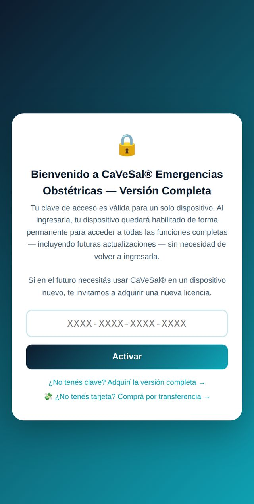
Main screen
At the top, the menu (Home, Simulator, Demo Version, Guide Mode and About). Below it, the quick entry, the examples button and the patient data bar.
Quick entry: emergency now or start from scratch
- Tengo una emergencia ahora (I have an emergency now): choose the code (Red, HDP, Yellow or Blue) and voice mode opens, dictating each step. See Voice mode.
- Empezar desde cero (Start from scratch): yes/no questions that lead you to the right code when it is not yet clear what is happening.
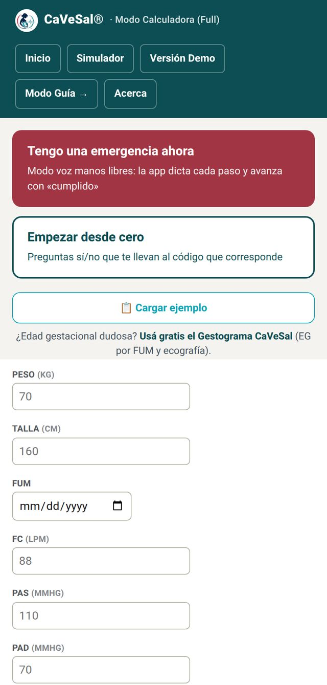
Load example Also in the demo
Loads an illustrative case to see how each module responds: Code Red (hypovolemic shock), Code HDP (severe preeclampsia), Code Yellow (sepsis), the three partographs, third stage of labor and 2-hour postpartum monitoring. Scroll to see the results.
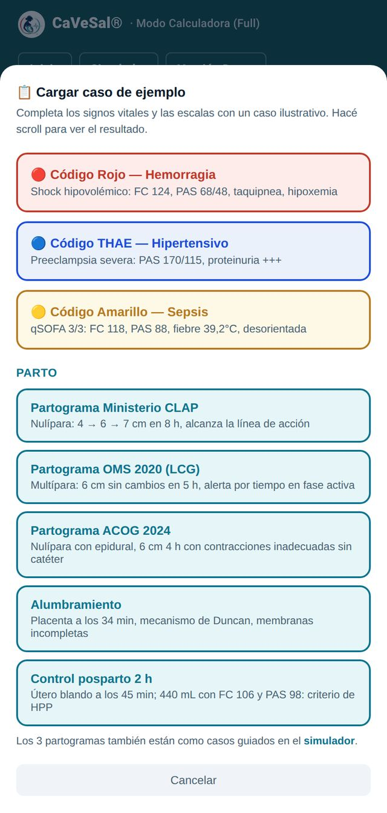
Patient data bar
Enter weight, height, LMP, HR, SBP and DBP. The app instantly calculates BMI, gestational age, MAP and shock index, color-coded by threshold. These data are copied to every table unless you edit them in each one.
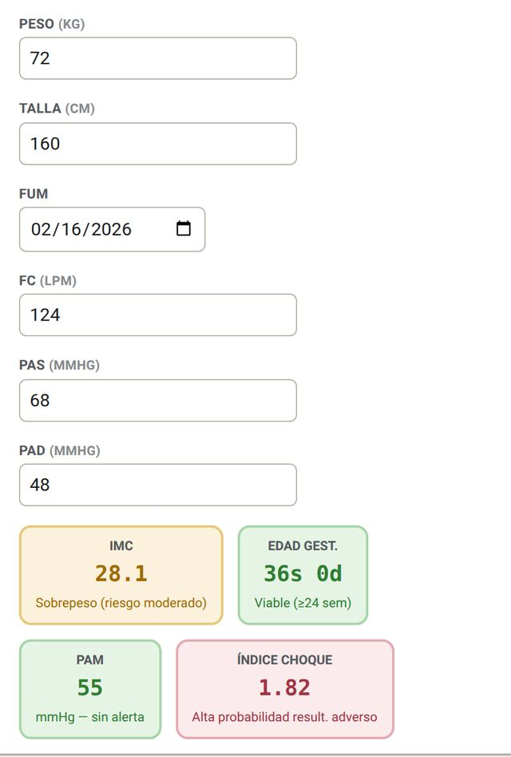
Code Red — Obstetric hemorrhage Full version
Seven sub-tabs that follow the real sequence of care: activation, primary response, refractory, recovery, calculators, bleeding and coagulation, and bleeding in pregnancy.
1. Activation: shock classification
Enter estimated blood loss, mental status, perfusion, pulse and SBP. The degree of shock (Vélez 2009) is defined by the worst parameter, and the card indicates whether Code Red should be activated according to the WHO 2025 criterion.
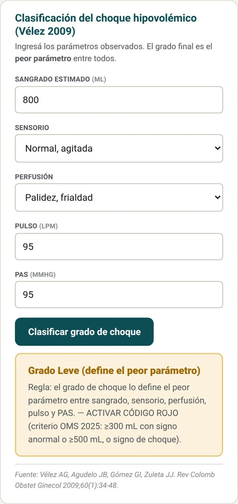
2. Primary response: E-MOTIVE and 4 Ts
Checklist of the E-MOTIVE bundle (early detection, uterine massage, oxytocics, tranexamic acid, fluids and examination) and cause classification by the 4 Ts (tone, trauma, tissue, thrombin).
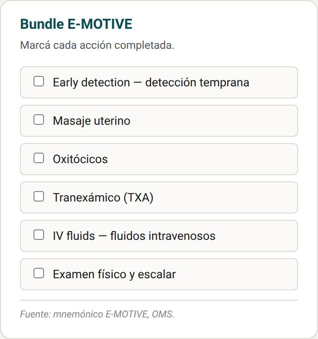
3. Refractory and Level 0-3 escalation
Tick the maneuvers performed and the app suggests the response level: bimanual and aortic compression, intrauterine balloon, Zea technique, embolization, blood products, transfer, compression sutures, vascular ligation (O'Leary, Posadas, Tsirulnikov, hypogastric) and hysterectomy.
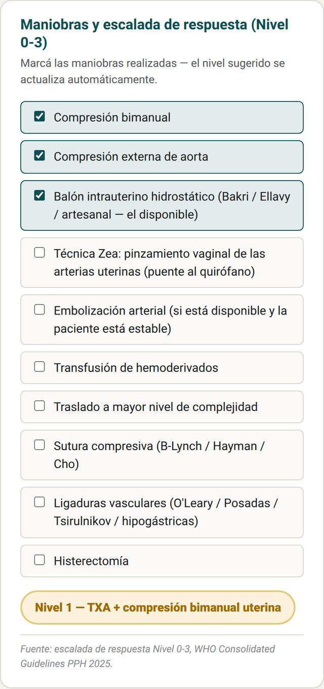
5. Calculators and alerts
Obstetric Alert Scale: by default EAPO MSPBS 2025/2022, with a scale selector (including the Alerta Obstétrica CaVeSal®). Vital signs are filled in automatically from the top bar, and the card reminds you of the golden hour and the monitoring frequency for each color.
HELLP syndrome: criterion selector (Mississippi by default). With platelets, AST/ALT and LDH it classifies and suggests management.
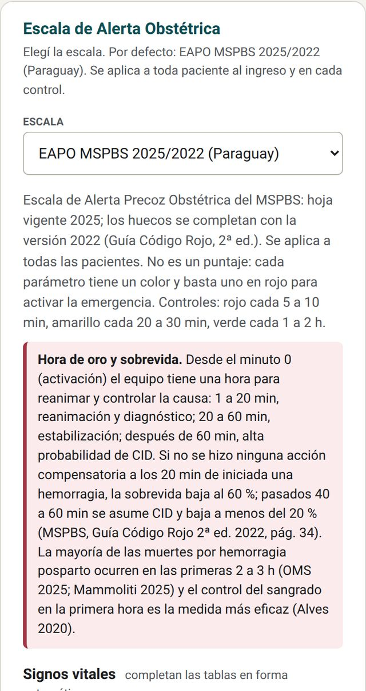
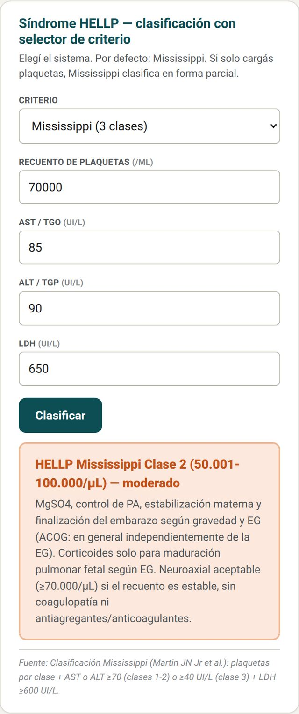
6. Bleeding and coagulation
Estimated blood volume and allowable blood loss (with the weight from the top bar), quantification of blood loss (gravimetric and suctioned), laboratory coagulopathy with DIC scores, and ROTEM reading (EXTEM/FIBTEM) with guidance doses.
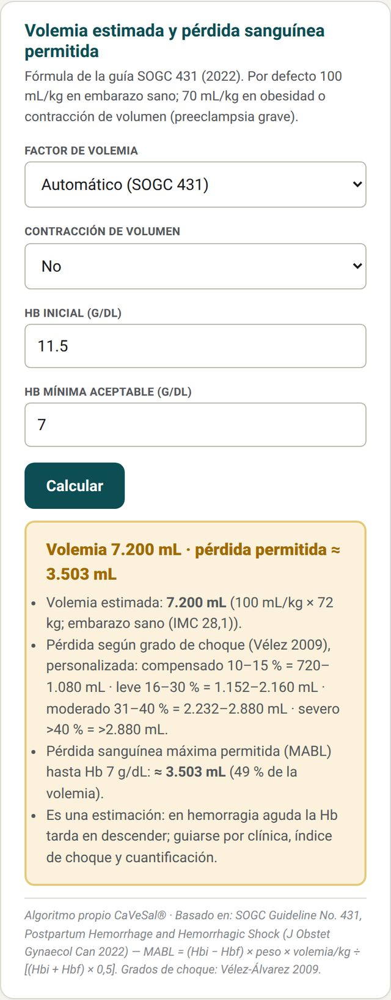
7. Bleeding in the first and second half of pregnancy
Step-by-step flowcharts: you answer each question and the app moves forward; you can correct any answer with «cambiar» (change).
- First half: threatened miscarriage and the forms of miscarriage, pregnancy of unknown location, ectopic (with criteria selector) and molar pregnancy (with follow-up selector).
- Second half: placenta previa, abruption, uterine rupture, vasa previa and placenta accreta spectrum (with timing-of-birth selector).
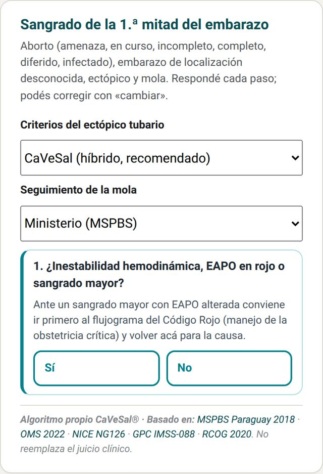
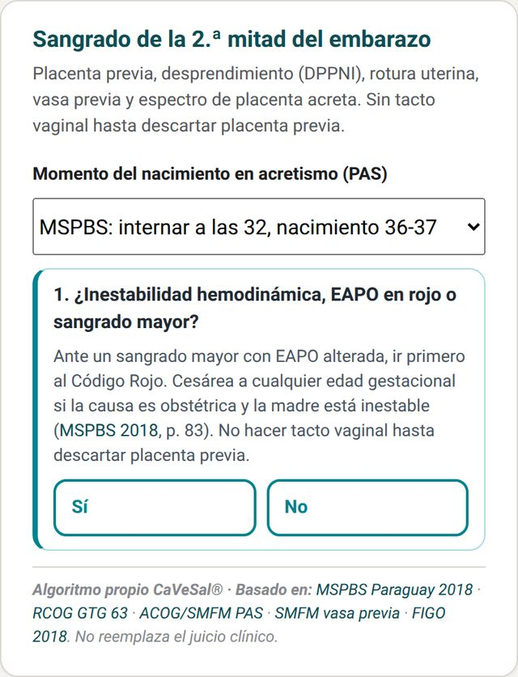
Code HDP — Hypertensive disorders Full version
Automatic classification with the BP from the top bar, hemodynamic phenotype (MAP/HR index), target-organ damage and proteinuria, antihypertensive selector, sFlt-1/PlGF ratio, ophthalmic artery Doppler, guided algorithm and eclampsia checklist.
Classification and treatment
With SBP ≥160 or DBP ≥110 the card flags severe hypertension and the indication to activate the code. The antihypertensive selector shows the dose, interval and maximum dose of each drug.
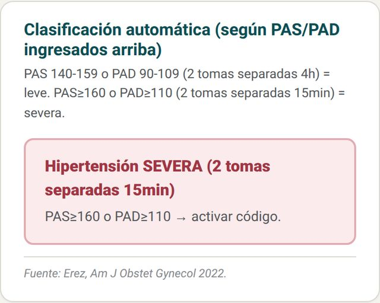
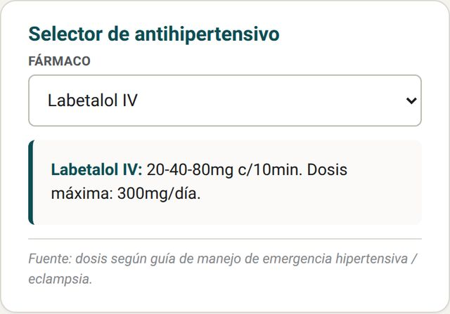
Code Yellow — Maternal sepsis Full version
OTAS obstetric triage, California Criteria, comparative screening (qSOFA, SIRS and MEOWS), "Sepsis 4-5-3" bundle with timers and antibiotic regimen by source.
Screening and bundle with timer
No score alone confirms or rules out sepsis: the comparative card makes this clear. The 4-5-3 bundle starts the 1-, 3- and 6-hour timers and tracks the list of what to take, give and consider.
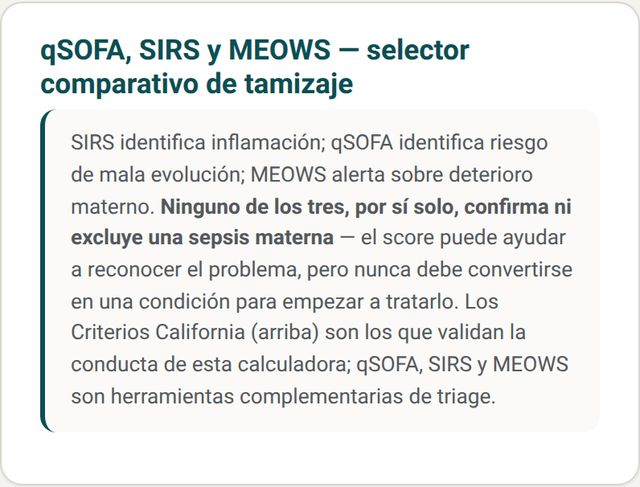
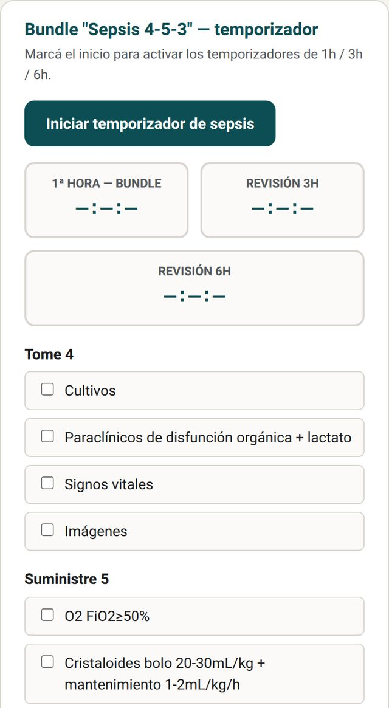
Obstetric Code Blue — Maternal arrest and collapse Full version
CPR timer with the 4-minute rule, activation checklist, A-H causes with direct access to each code, and weight-based lipid emulsion for local anesthetic toxicity.
Timer and the 4-minute rule
Tap «Iniciar paro» (Start arrest) at recognition. If the arrest was not witnessed, use «+1 min» to add the previous time. Every 2 minutes a rhythm-check alert sounds. At minute 4 without return of circulation the screen turns red and the alarm sounds to start hysterotomy; at minute 5 it marks the delivery target. With fundal height below the umbilicus there is no hysterotomy alarm. Each event (adrenaline, shock, hysterotomy, birth, ROSC) is logged with its time and can be copied into the clinical record. The screen stays on while the clock is running.
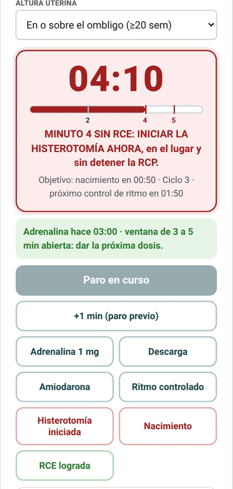
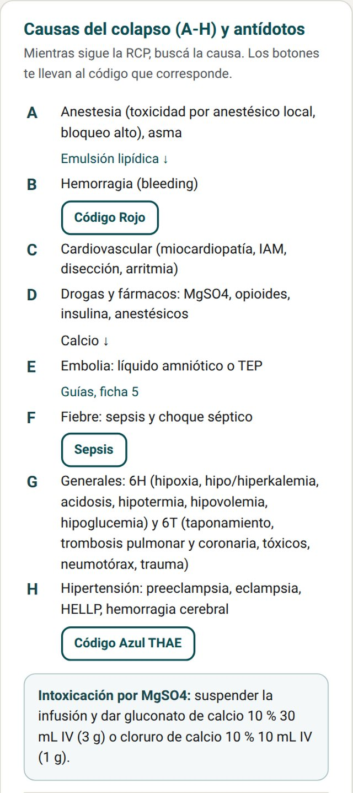
Thromboprophylaxis — traffic-light system Full version
General measures, four-color risk scale and weight-based low-molecular-weight heparin dose calculator.
Risk and LMWH dose
Tick the factors present. The result takes the most severe category reached and the corresponding action. The dose is calculated with the weight from the top bar and the chosen drug and dose type.
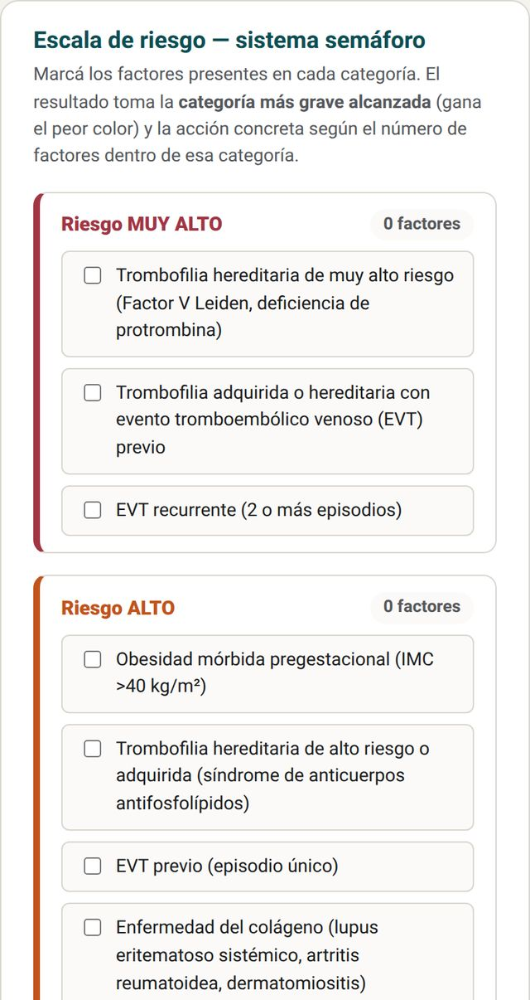
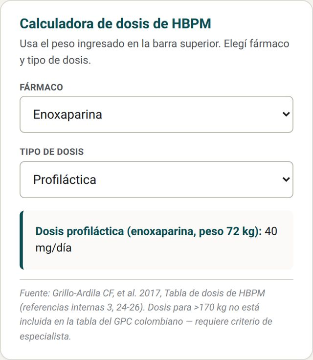
Labor and Postpartum Full version
PROM and threatened preterm labor, cervical insufficiency and cerclage, lung maturity, Robson classification at admission, tocolysis, contraction counter, partographs, third stage, postpartum monitoring and magnesium sulfate.
PROM and threatened preterm labor
PROM diagnosis with a checkbox flowchart and management by gestational age. Lung maturation and neuroprotection are calculated the same way in PROM and threatened preterm labor. MSPBS Paraguay cut-offs are used by default; variants from other guidelines appear at the bottom.
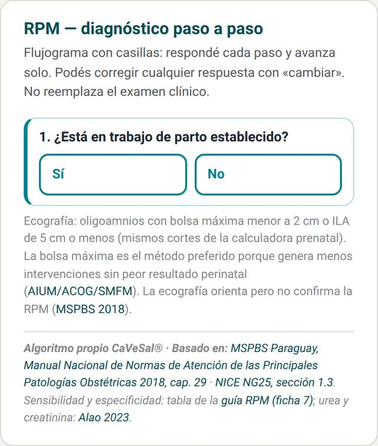
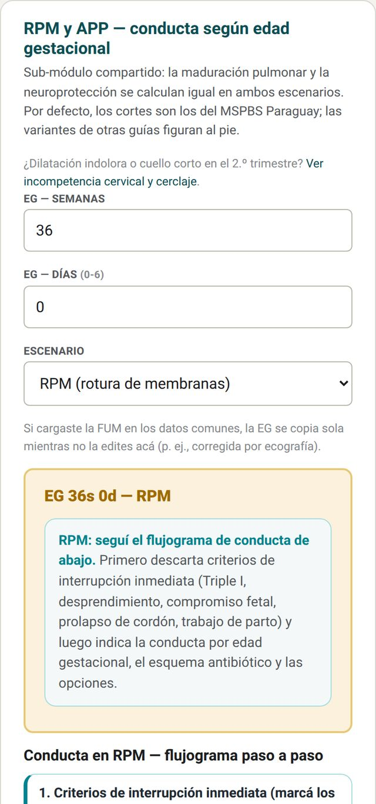
Robson classification at admission
At admission for birth, enter the 6 WHO variables: parity, previous cesareans, onset of labor, number of fetuses, presentation and GA. The app assigns the final group (with subgroups 2a/2b, 4a/4b and 5.1/5.2) and shows the intrapartum management for that group with its sources.
Parity is shared with the partograph, and GA is copied from the PROM/preterm labor card or from the LMP. The links in each group open the related cards (partograph, third stage, magnesium sulfate, tocolysis, signs of uterine rupture in Code Red) and the full table in the guide.
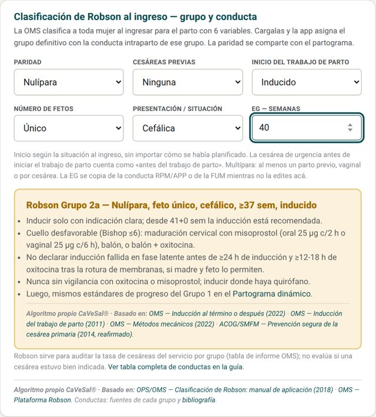
Tocolysis and partograph
Tocolysis: drug selector with loading and maintenance doses, and a timer that alerts you at each dose.
Dynamic partograph: three models (Ministry/CLAP, WHO 2020 and ACOG 2024). You record each assessment; the graph and interpretation change with the model, and data are kept when you switch models.
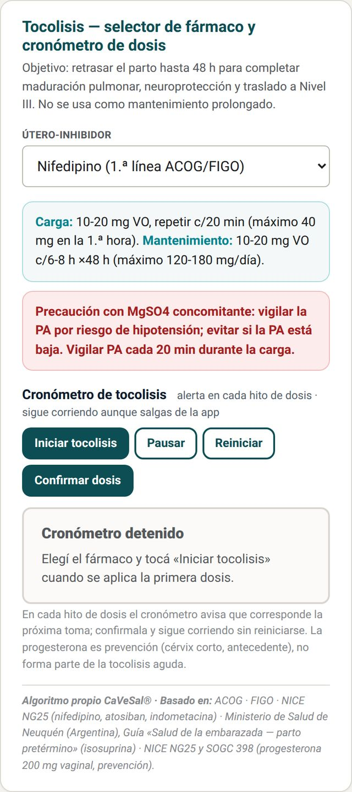
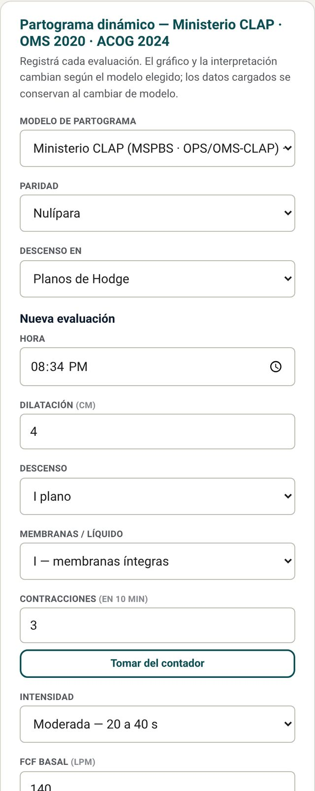
Magnesium sulfate
Choose the indication (for example, fetal neuroprotection before 32 weeks or eclampsia prevention) and the app builds the loading dose, maintenance and drip. The toxicity monitor records respiratory rate, urine output and patellar reflex, and indicates whether stopping criteria are met.
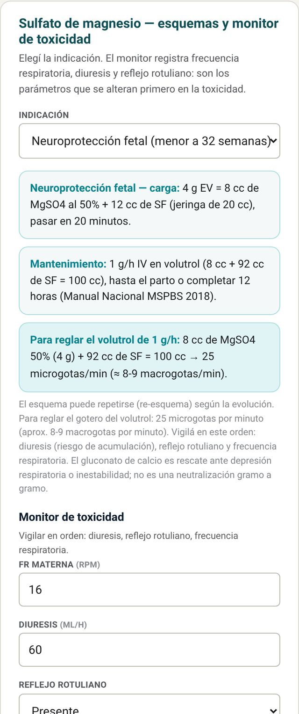
Hands-free voice mode Full version
For when your hands are busy: the app reads each step aloud and moves on when the team confirms.
How it works
Tap Tengo una emergencia ahora (I have an emergency now) and choose the code: Red (hemorrhage), HDP (severe hypertension), Yellow (sepsis) or Blue (arrest and collapse).
Allow microphone access. The clock starts at minute zero and the code phases are shown at the top.
Say «cumplido» (done) to move on, «repetir» (repeat), «atrás» (back), «sí» (yes) or «no» (no). You can also use the on-screen buttons.
When the code is closed, a time-stamped log of each step remains.
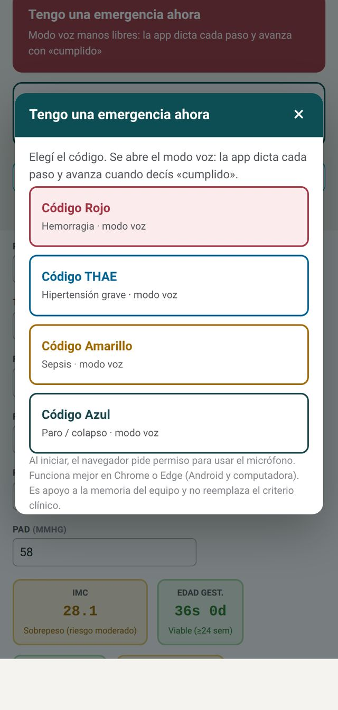
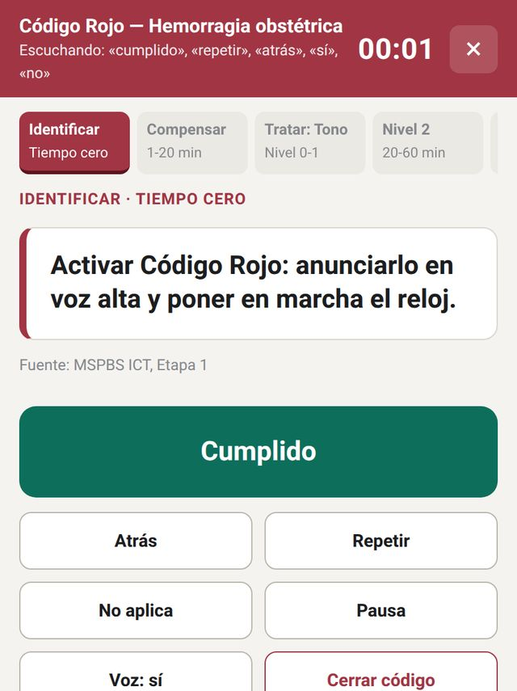
Guide Mode and bibliography Full version
The quick-access guide for an obstetric emergency: definitions, classifications, flowcharts, doses and techniques for each code, with each guideline's variants and its reference.
How to search
Use the keyword search (for example: partograph, code red, bleeding, thromboprophylaxis), the glossary or the self-assessment. Each code has its own expandable guide. The full bibliography, with links to the sources, is on the bibliography page. The guide is also available in English and Portuguese.
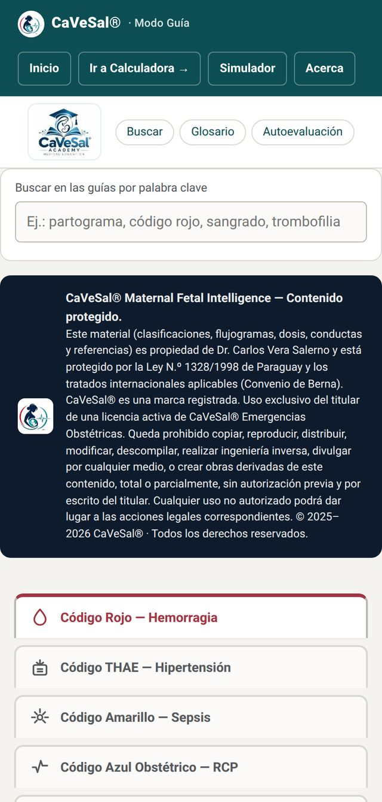
Simulator Also in the demo
Twelve fictional cases to train the team: maternal emergencies, Alert Scale, labor with partographs, Obstetric Code Blue (CPR) and voice mode.
How to play
The app presents the patient, you decide and the case reacts, with a vital-signs monitor. At the end you get feedback with the source of each answer. You can turn on the clock to practice with a time limit per decision.
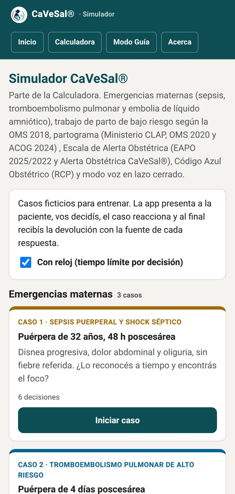
About and legal notice
Clinical author, clinical bases, the CaVeSal® ecosystem with the QR code of each app, and links to prices, terms and privacy.
Legal notice
CaVeSal® is a clinical decision-support tool for health professionals. It does not diagnose, does not replace the treating physician's clinical judgment or individualized assessment, and is not a medical device. Clinical decisions are the sole responsibility of the professional.
CaVeSal® implements proprietary algorithms, developed from the references cited on each card. The mention of guidelines, societies and institutions (MSPBS, WHO, FIGO, NICE, RCOG, ACOG, SMFM, Surviving Sepsis Campaign, AHA, among others) is for bibliographic attribution; none of them sponsors, endorses or certifies CaVeSal®.
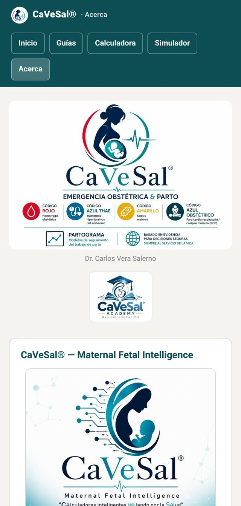
Questions about a module? Write to us at drverasalerno@gmail.com · Dr. Carlos Vera Salerno · CaVeSal® · Last updated: October 2026